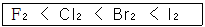
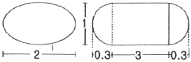
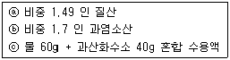
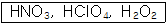
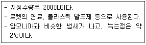
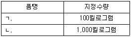
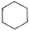
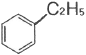
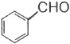

위험물산업기사 (2017-09-23 기출문제)
1과목: 일반화학
1. 금속의 특징에 대한 설명 중 틀린 것은?
- 고체 금속은 연성과 전성이 있다.
- 고체상태에서 결정구조를 형성한다.
- 반도체, 절연체에 비하여 전기전도도가 크다.
- 상온에서 모두 고체이다.
(정답률: 86%)

2. [OH-] = 1×10-5mol/L 인 용액의 pH와 액성으로 옳은 것은?
- pH=5, 산성
- pH=5, 알칼리성
- pH=9, 산성
- pH=9, 알칼리성
(정답률: 88%)
3. 다음 물질 1g을 각각 1kg의 물에 녹였을 때 빙점강하가 가장 큰 것은?
- CH3OH
- C2H5OH
- C3H5(OH)3
- C6H12O6
(정답률: 62%)
4. 다음 중 침전을 형성하는 조건은?
- 이온곱＞용해도곱
- 이온곱=용해도곱
- 이온곱＜용해도곱
- 이온곱+용해도곱=1
(정답률: 80%)
5. 다음 물질 중 산성이 가장 센 물질은?
- 아세트산
- 벤젠술폰산
- 페놀
- 벤조산
(정답률: 64%)
6. 다음 중 두 물질을 섞었을 때 용해성이 가장 낮은 것은?
- C6H6과 H2O
- NaCl과 H2O
- C2H5OH과 H2O
- C2H5OH과 CH3OH
(정답률: 59%)
7. 공기 중에 포함되어 있는 질소와 산소의 부피비는 0.79 : 0.21 이므로 질소와 산소의 분자수의 비도 0.79 : 0.21 이다. 이와 관계있는 법칙은?
- 아보가드로 법칙
- 일정 성분비의 법칙
- 배수비례의 법칙
- 질량보존의 법칙
(정답률: 69%)
8. 어떤 기체가 탄소원자 1개당 2개의 수소원자를 함유하고 0°C, 1기압에서 밀도가 1.25g/L일 때 이 기체에 해당하는 것은?
- CH2
- C2H4
- C3H6
- C4H8
(정답률: 81%)
9. 미지농도의 염산 용액 100mL를 중화하는데 0.2N NaOH 용액 250mL가 소모되었다. 이 염산의 농도는 몇 N인가?
- 0.⑤
- 0.2
- 0.25
- 0.5
(정답률: 67%)
10. 다음 중 산소와 같은 족의 원소가 아닌 것은?
- S
- Se
- Te
- Bi
(정답률: 65%)
11. 25°C 의 포화용액 90g 속에 어떤 물질이 30g 녹아 있다. 이 온도에서 이 물질의 용해도는 얼마인가?
- 30
- 33
- 50
- 63
(정답률: 69%)
12. 탄소와 수소로 되어있는 유기화합물을 연소시켜 CO2 44g, H2O 27g을 얻었다. 이 유기화합물의 탄소와 수소 몰비율(C:H)은 얼마인가?
- 1:3
- 1:4
- 3:1
- 4:1
(정답률: 75%)
13. 방사선에서  선과 비교한 α선에 대한 설명 중 틀린 것은?
선과 비교한 α선에 대한 설명 중 틀린 것은?
- 선보다 투과력이 강하다.
 선보다 형광작용이 강하다.
선보다 형광작용이 강하다. 선보다 감광작용이 강하다.
선보다 감광작용이 강하다. 보다 전리작용이 강하다.
보다 전리작용이 강하다.
(정답률: 78%)
14. 탄산 음료수의 병마개를 열면 거품이 솟아오르는 이유를 가장 올바르게 설명한 것은?
- 수증기가 생성되기 때문이다.
- 이산화탄소가 분해되기 때문이다.
- 용기 내부압력이 줄어들어 기체의 용해도가 감소하기 때문이다.
- 온도가 내려가게 되어 기체가 생성물의 반응이 진행되기 때문이다.
(정답률: 90%)
15. 탄소수가 5개인 포화탄화수소 펜탄의 구조이성질체 수는 몇개인가?
- 2개
- 3개
- 4개
- 5개
(정답률: 79%)
16. 집기병 속에 물에 적신 빨간 꽃잎을 넣고 어떤 기체를 채웠더니 얼마 후 꽃잎이 탈색되었다. 이와 같이 색을 탈색(표백)시키는 성질을 가진 기체는?
- He
- CO2
- N2
- Cl2
(정답률: 88%)
17. 다음과 같은 순서로 커지는 성질이 아닌 것은?

- 구성 원자의 전기음성도
- 녹는점
- 끓는점
- 구성 원자의 반지름
(정답률: 71%)
18. 어떤 주어진 양의 기체의 부피가 21°C, 1.4atm에서 250mL이다. 온도가 49°C로 상승되었을 때의 부피가 300mL라고 하면 이 의 압력은 약 얼마인가?
- 1.35atm
- 1.28atm
- 1.21atm
- 1.16atm
(정답률: 75%)
19. 밑줄 친 원소의 산화수가 +5인 것은?
- H3PO4
- KMnO4
- K2Cr2O7
- K3[Fe(CN)6]
(정답률: 79%)
20. 원자번호 11 이고, 중성자수가 12 인 나트륨의 질량수는?
- 11
- 12
- 23
- 24
(정답률: 92%)
2과목: 화재예방과 소화방법
21. 불활성가스소화약제 중 IG-541의 구성 성분이 아닌 것은?
- N2
- Ar
- He
- CO2
(정답률: 85%)
22. 위험물안전관리법령에서 정한 물분무소화설비의 설치기준에서 물분무소화설비의 방사구역은 몇 m2 이상으로 하여야 하는가?(단, 방호대상물의 표면적이 150 이상인 경우이다.)
- 75
- 100
- 150
- 350
(정답률: 68%)
23. 연소 시 온도에 따른 불꽃의 색상이 잘못된 것은?
- 적색: 약 850°C
- 황적색: 약 1100°C
- 휘적색: 약 1200°C
- 백적색: 약 1300°C
(정답률: 71%)
24. 스프링클러 설비의 장점이 아닌 것은?
- 소화약제가 물이므로 소화약제의 비용이 절감된다.
- 초기 시공비가 매우 적게 든다.
- 화재 시 사람의 조작 없이 작동이 가능하다.
- 초기화재의 진화에 효과적이다.
(정답률: 90%)
25. 제 3종 분말소화약제에 대한 설명으로 틀린 것은?
- A급을 제외한 모든 화재에 적응성이 있다.
- 주성분은 NH4H2PO4 의 분자식으로 표현된다.
- 제1인산암모늄이 주성분이다.
- 담홍색(또는 황색)으로 착색되어 있다.
(정답률: 86%)
26. Halon 1301, Halon 1211, Halon 2402 중 상온, 상압에서 액체상태인 Halon 소화약제로만 나열한 것은?
- Halon 1211
- Halon 2402
- Halon 1301, Halon 1211
- Halon 2402, Halon 1211
(정답률: 60%)
27. 위험물의 화재발생시 적응성이 있는 소화설비의 연결로 틀린 것은?
- 마그네슘 - 포소화기
- 황린 - 포소화기
- 인화성고체 - 이산화탄소소화기
- 등유 - 이산화탄소소화기
(정답률: 66%)
28. 위험물안전관리법령상 전역방출방식의 분말소화설비에서 분사헤드의 방사압력은 몇 MPa 이상이어야 하는가?
- 0.1
- 0.5
- 1
- 3
(정답률: 51%)
29. 물통 또는 수조를 이용한 소화가 공통적으로 적응성이 있는 위험물은 제 몇 류 위험물인가?
- 제2류 위험물
- 제3류 위험물
- 제4류 위험물
- 제5류 위험물
(정답률: 73%)
30. 대통령령이 정하는 제조소등의 관계인은 그 제조소등에 대하여 연 몇 회 이상 정기점검을 실시해야 하는가?(단, 특정옥외탱크저장소의 정기점검은 제외한다.)
- 1
- 2
- 3
- 4
(정답률: 80%)
31. 위험물을 저장하기 위해 제작한 이동저장탱크의 내용적이 20000L 인 경우 위험물 허가를 위해 산정할 수 있는 이 탱크의 최대용량은 지정수량의 몇 배인가?(단, 저장하는 위험물은 비수용성 제2석유류이며 비중은 0.8, 차량의 최대적재량은 15톤이다.)
- 21배
- 18.75배
- 12배
- 9.375배
(정답률: 67%)
32. 표준상태에서 벤젠 2mol이 완전 연소하는데 필요한 이론 공기요구량은 몇 L인가?(단, 공기 중 산소는 21vol%이다.)
- 168
- 336
- 1600
- 3200
(정답률: 61%)
33. 이산화탄소 소화기는 어떤 현상에 의해서 온도가 내려가 드라이아이스를 생성 하는가?
- 주울-톰슨 효과
- 사이펀
- 표면장력
- 모세관
(정답률: 80%)
34. 위험물안전관리법령상 전역방출방식 또는 국소방출방식의 분말소화설비의 기준에서 가압식의 분말소화설비에는 얼마 이하의 압력으로 조정할 수 있는 압력조정기를 설치하여야 하는가?
- 2.0MPa
- 2.5MPa
- 3.0MPa
- 5MPa
(정답률: 77%)
35. 다음 중 점화원이 될 수 없는 것은?
- 전기스파크
- 증발잠열
- 마찰열
- 분해열
(정답률: 78%)
36. 할로겐화합물 중 CH3I 에 해당하는 할론번호는?
- 1031
- 1301
- 13001
- 10001
(정답률: 69%)
37. 연소형태가 나머지 셋과 다른 하나는?
- 목탄
- 메탄올
- 파라핀
- 유황
(정답률: 74%)
38. 전기설비에 화재가 발생하였을 경우에 위험물 안전관리법령상 적응성을 가지는 소화설비는?
- 물분무소화설비
- 포소화기
- 봉상강화액소화기
- 건조사
(정답률: 55%)
39. 그림과 같은 타원형 위험물탱크의 내용적은 약 얼마인가?(단, 단위는 m이다.)

- 5.03m3
- 7.52m3
- 9.03m3
- 19.⑤m3
(정답률: 65%)
40. 능력단위가 1 단위의 팽창질석(삽 1개 포함)은 용량이 몇 L인가?
- 160
- 130
- 90
- 60
(정답률: 86%)
3과목: 위험물의 성질과 취급
41. 산화프로필렌에 대한 설명으로 틀린 것은?
- 무색의 휘발성 액체이고, 물에 녹는다.
- 인화점이 상온 이하이므로 가연성 증기 발생을 억제하여 보관해야 한다.
- 은, 마그네슘 등의 금속과 반응하여 폭발성 혼합물을 생성한다.
- 증기압이 낮고 연소범위가 좁아서 위험성이 높다.
(정답률: 65%)
42. 황의 연소생성물과 그 특성을 옳게 나타낸 것은?
- SO2, 유독가스
- SO2, 청정가스
- H2S, 유독가스
- H2S, 청정가스
(정답률: 82%)
43. 위험물을 지정수량이 큰 것부터 작은 순서로 옳게 나열한 것은?
- 니트로화합물＞브롬산염류＞히드록실아민
- 니트로화합물＞히드록실아민＞브롬산염류
- 브롬산염류＞히드록실아민＞니트로화합물
- 브롬산염류＞니트로화합물＞히드록실아민
(정답률: 53%)
44. 위험물안전관리법령상의 지정수량이 나머지 셋과 다른 하나는?
- 질산에스테르류
- 니트로소화합물
- 디아조화합물
- 히드라진 유도체
(정답률: 62%)
45. 다음 중 물과 반응하여 산소와 열을 발생하는 것은?
- 염소산칼륨
- 과산화나트륨
- 금속나트륨
- 과산화벤조일
(정답률: 62%)
46. 다음 중 제1류 위험물의 과염소산염류에 속하는 것은?
- KCIO3
- NaCIO4
- HCIO4
- NaCIO2
(정답률: 60%)
47. 다음 위험물 중 인화점이 가장 높은 것은?
- 메탄올
- 휘발유
- 아세트산메틸
- 메틸에틸케톤
(정답률: 43%)
48. 위험물안전관리법령에 의한 위험물제조소의 설치기준으로 옳지 않는 것은?
- 위험물을 취급하는 기계ㆍ기구 그 밖의 설비는 위험물이 새거나 넘치거나 비산하는 것을 방지할 수 있는 구조로 하여야 한다.
- 위험물을 가열하거나 냉각하는 설비 또는 위험물의 취급에 수반하여 온도변화가 생기는 설비에는 온도측정장치를 설치하여야 한다.
- 위험물을 취급함에 있어서 정전기가 발생할 우려가 있는 설비에는 정전기를 유효하게 제거할 수 있는 설비를 설치하여야 한다.
- 위험물을 취급하는 동관을 지하에 설치하는 경우에는 지진ㆍ풍압ㆍ지반침하 및 온도변화에 안전한 구조의 지지물에 설치하여야 한다.
(정답률: 74%)
49. 위험물안전관리법령상 옥외탱크저장소의 위치ㆍ구조 및 설비의 기준에서 간막이 둑을 설치할 경우, 그 용량의 기준으로 옳은 것은?
- 간막이 둑안에 설치된 탱크의 용량의 110% 이상일 것
- 간막이 둑안에 설치된 탱크의 용량 이상일 것
- 간막이 둑안에 설치된 탱크의 용량의 10% 이상일 것
- 간막이 둑안에 설치된 탱크의 간막이 둑 높이 이상 부분의 용량 이상일 것
(정답률: 63%)
50. 다음 중 A~C 물질 중 위험물안전관리법령상 제6류 위험물에 해당하는 것은 모두 몇 개인가?

- 1개
- 2개
- 3개
- 없음
(정답률: 64%)
51. 다음 중 위험물 중 가연성 액체를 옳게 나타낸 것은?

- HCIO4, HNO3
- HNO3, H2O2
- HNO3, HCIO4, H2O2
- 모두 가연성이 아님
(정답률: 65%)
52. 다음에서 설명하는 위험물을 옳게 나타낸 것은?

- N2H4
- C6H5CH=CH2
- NH4CIO4
- C6H5Br
(정답률: 52%)
53. 지정수량 이상의 위험물을 차량으로 운반하는 경우에는 차량에 설치하는 표지의 색상에 관한 내용으로 옳은 것은?
- 흑색바탕에 청색의 도료로 “위험물”이라고 표기할 것
- 흑색바탕에 황색의 반사도료로 “위험물” 이라고 표기할 것
- 적색바탕에 흰색의 반사도료로 “위험물” 이라고 표기할 것
- 적색바탕에 흑색의 도료로 “위험물” 이라고 표기할 것
(정답률: 69%)
54. 위험물을 저장 또는 취급하는 탱크의 용량산정 방법에 관한 설명으로 옳은 것은?
- 탱크의 내용적에서 공간용적을 뺀 용적으로 한다.
- 탱크의 공간용적에서 내용적을 뺀 용적으로 한다.
- 탱크의 공간용적에 내용적을 더한 용적으로 한다.
- 탱크의 볼록하거나 오목한 부분을 뺀 용적으로 한다.
(정답률: 84%)
55. 동식물유류에 대한 설명 중 틀린 것은?
- 요오드가가 클수록 자연발화의 위험이 크다.
- 아마인유는 불건성유이므로 자연발화의 위험이 낮다.
- 동식물유류는 제4류 위험물에 속한다.
- 요오드가가 130 이상인 것이 건성유이므로 저장할 때 주의한다.
(정답률: 74%)
56. 황린과 적린의 공통점으로 옳은 것은?
- 독성
- 발화점
- 연소생성물
- CS2에 대한 용해성
(정답률: 82%)
57. 금속 칼륨의 일반적인 성질에 대한 설명으로 틀린 것은?
- 칼로 자를 수 있는 무른 금속이다.
- 에탄올과 반응하여 조연성 기체(산소)를 발생한다.
- 물과 반응하여 가연성 기체를 발생한다.
- 물보다 가벼운 은백색의 금속이다.
(정답률: 62%)
58. 질산나트륨을 저장하고 있는 옥내저장소(내화구조의 격벽으로 완전히 구획된 실이 2 이상 있는 경우에는 동일한 실)에 함께 저장하는 것이 법적으로 허용되는 것은?(단, 위험물을 유별로 정리하여 서로 1m 이상의 간격을 두는 경우이다.)
- 적린
- 인화성고체
- 동식물유류
- 과염소산
(정답률: 59%)
59. 다음 표의 빈칸 (ㄱ,ㄴ)에 알맞은 품명은?

- ㄱ: 철분, ㄴ: 인화성고체
- ㄱ: 적린, ㄴ: 인화성고체
- ㄱ: 철분, ㄴ: 마그네슘
- ㄱ: 적린, ㄴ: 마그네슘
(정답률: 76%)
60. 다음 중 위험물안전관리법령상 제2석유류에 해당되는 것은?



(정답률: 61%)
고체 금속은 연성과 전성이 있으며, 고체상태에서 결정구조를 형성한다. 또한 반도체, 절연체에 비하여 전기전도도가 크다는 것은 맞다.